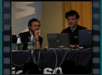

Certificati digitali? Cosa sono, come funzionano, come si ottengono
 Speaker(s): Piergiorgio Malusardi
Speaker(s): Piergiorgio Malusardi
Certification Authority
Speaker(s): Fabrizio Grossi
Gestione del ciclo di vita dei certificati
Speaker(s): Piergiorgio Malusardi
Analisi dei rischi che si corrono tramite esempi pratici
Speaker(s): Fabrizio Grossi
IPSec per proteggere il traffico di rete

Speaker(s): Fabrizio Grossi
Virtual Private Network per un accesso sicuro alla rete aziendale
Speaker(s): Piergiorgio Malusardi
SSL per proteggere il traffico Web e rendere sicura l’autenticazione Basic
Speaker(s): Piergiorgio Malusardi
WIFI: come rendere le reti Wireless più sicure delle reti Ethernet
Speaker(s): Fabrizio Grossi
Windows Vista: ultime novità su Windows Vista e Longhorn
Speaker(s): Piergiorgio Malusardi